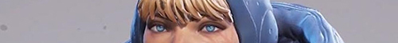
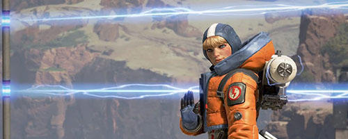

Wattson (real name "Natalie Paquette") joined The Apex Games relatively easily thanks in-part to the position her father Luc held as a highly-ranking Engineer working behind the scenes of The Games. Following in his footsteps, Natalie became engrossed in electrical engineering and the two would go on to invent what became the most integral part of the Games: The Ring.
Abilities and Characteristics
Wattson's abilities stem from her incomparable electrical ingenuity as well as a characteristic she gained from a freak electrical accident, leaving her almost entirely immune to the lethality of unstable electricity. Combined, these characteristics allow her to handle objects of extremely high voltage.
Wattson's abilities include:
Perimeter Security: Wattson is able to place down numerous metal fence posts that act as a circuit and are charged with high-voltage electricity, immobilizing and damaging those that cross between them. These fences do an exceptional job locking down tight areas.
Interception Pylon: Wattson places a massive pylon with two actively spinning charge coils on the top that both charge the shields of those in its vicinity as well as intercept and evaporate incoming ordnance (like grenades and missiles). Her pylon can play a pivotal defensive role when placed correctly, often turning the tides in her team's favour.
Although Wattson has a very friendly demeanor, few get to see her softer side.
Wattson has only shown emotional vulnerability to select other Legends such as Caustic, Bangalore, Lifeline, and Gibraltar. These are the ones that comforted her and helped her cope with the sudden passing of her father, Luc.
Quotes
If there is one thing that Wattson loves as much as electricity, it is a good corny pun. While every now and then she will say something to be taken seriously, more often than not she is dishing out borderline dad-jokes that are sure to induce an eye-roll from most anyone in ear-shot.
"I never say die; I fight until it hertz. Hahaha, I like that one!"
"I'm current-ly at the top of my game! Get it?"
"I'm ec-static to fight!"
These are only a few of Wattson's countless witty remarks. For a full list of Wattson quotes, click here.
 Interception Pylon: Wattson places a massive pylon with two actively spinning charge coils on the top that both charge the shields of those in its vicinity as well as intercept and evaporate incoming ordnance (like grenades and missiles). Her pylon can play a pivotal defensive role when placed correctly, often turning the tides in her team's favour.
Interception Pylon: Wattson places a massive pylon with two actively spinning charge coils on the top that both charge the shields of those in its vicinity as well as intercept and evaporate incoming ordnance (like grenades and missiles). Her pylon can play a pivotal defensive role when placed correctly, often turning the tides in her team's favour.